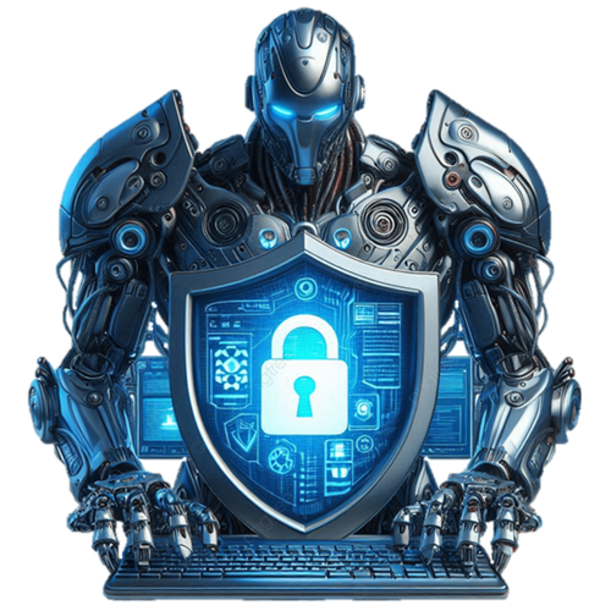
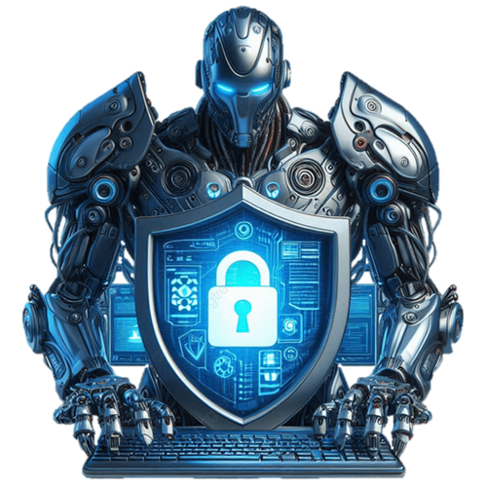
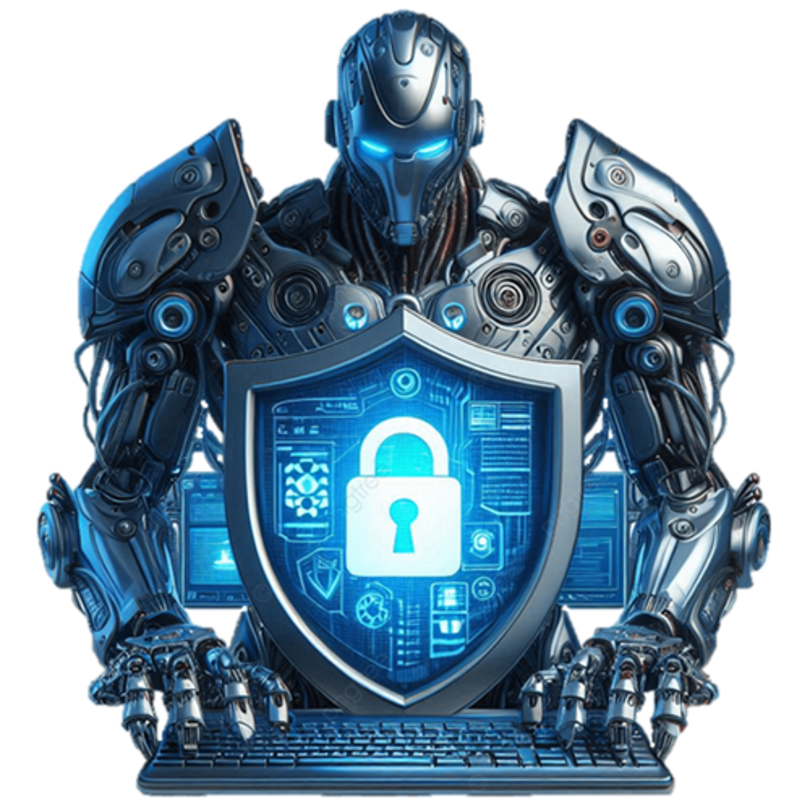
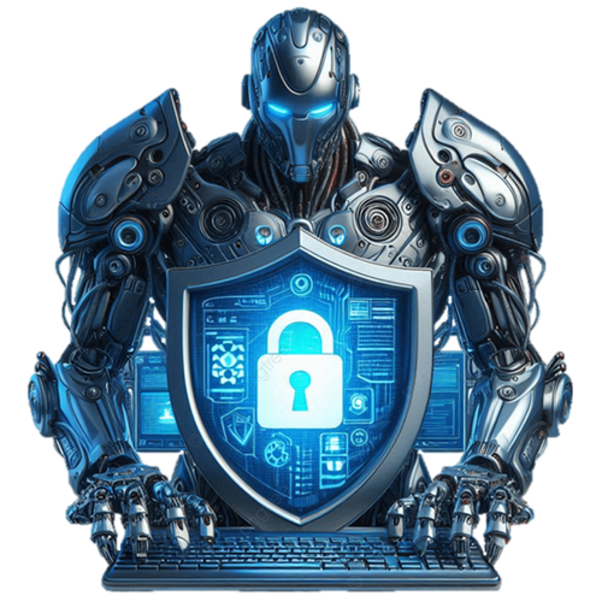

Entonces, ¿cómo proteger a su organización contra el ciberdelito? Algunas de las mejores formas de abordar la defensa contra ataques cibernéticos incluyen:
Educar al personal sobre la seguridad cibernética: Para todas las empresas, es fundamental asegurarse de que el personal sea consciente de la importancia de la ciberseguridad. Brindar capacitación periódica y actualizada sobre seguridad cibernética para que los usuarios sepan:
verificar los vínculos antes de hacer clic en ellos;
verificar las direcciones de correo electrónico de los correos electrónicos que reciban;
pensarlo dos veces antes de enviar información confidencial. Si una solicitud parece extraña, es probable que lo sea. Llame por teléfono a la persona en cuestión antes de realizar una solicitud de la que no esté seguro.
La capacitación, la educación y la concienciación de los usuarios reducirán la probabilidad de que los intentos de ingeniería social tengan éxito.
Cifrar y hacer copias de seguridad de los datos: Las empresas a menudo recopilan y almacenan información de identificación personal, que los ciberdelincuentes pueden obtener y utilizar para robar identidades y, por lo tanto, comprometer aún más los datos comerciales. En caso de un ataque cibernético, es importante que haga una copia de seguridad de sus datos para evitar tiempos de inactividad prolongados, pérdida de datos y pérdidas financieras. Si el ransomware ataca y causa estragos, su software de copia de seguridad podría ser atacado, lo que podría dañar sus archivos de copia de seguridad, incluso si tiene medidas de seguridad sólidas. Asegúrese de cifrar todos los datos confidenciales, incluida la información de clientes y empleados.
Realizar auditorías periódicas: Aunque no puede eliminar por completo el riesgo de ataques cibernéticos, puede tomar medidas para revisar su protección cibernética a intervalos regulares. Revise sus políticas de ciberseguridad y compruebe de tanto en tanto el software, los sistemas y los servidores para asegurarse de que su empresa esté completamente protegida. Acceda a los archivos de copia de seguridad y descárguelos para ver cómo funcionará el proceso de recuperación para su empresa. Identifique vulnerabilidades potenciales, idee formas de superarlas y confirme si los archivos respaldados se han dañado de alguna manera. Elimine el software no utilizado para reducir el riesgo de que los ciberdelincuentes lo exploten para robar o destruir sus datos.
Tenga en cuenta las brechas de datos internos: A medida que las brechas de datos internos se vuelven más frecuentes, cree una política integral de uso de datos clara, para que todos la utilicen. Ponga restricciones de acceso. Por ejemplo, piense en el riesgo que entraña tener contratistas independientes que lleven dispositivos no filtrados a su organización sin un procedimiento de acceso completo y tome las medidas necesarias para solucionarlo.
Restringir los derechos de administrador: Reduzca al mínimo el riesgo de hackeo restringiendo los derechos de administrador a un número seleccionado de personal e instalando un sistema que ofrezca seguridad de empleado a empleado. El control de acceso de usuarios consiste en limitar los permisos de ejecución de los usuarios comunes y corrientes y hacer cumplir el principio de privilegios mínimos necesarios para realizar las tareas necesarias. Uno de los riesgos para las empresas es que los empleados instalen software en dispositivos propiedad de la empresa que podrían comprometer sus sistemas. Impedir que el personal instale o incluso acceda a ciertos datos en su red es beneficioso para su seguridad.
Instalar un firewall: Colocar su red detrás de un firewall es una de las formas más efectivas de defenderse de un ataque cibernético. Un sistema de firewall ayudará a bloquear los ataques de fuerza bruta realizados en su red o sistemas antes de que puedan causar algún daño.
Mantenga el software, los dispositivos y los sistemas operativos actualizados: A menudo, los ataques cibernéticos se producen por la debilidad de los sistemas y el software que no están actualizados. Los piratas informáticos aprovechan estas debilidades para obtener acceso a su red. Para subsanarlas, algunas empresas invierten en un sistema de administración de parches que administrará todo el software y las actualizaciones del sistema, manteniendo su sistema sólido y actualizado.
Garantizar una directiva de contraseñas de mejores prácticas: Asegúrese de que se implemente y se siga una directiva de contraseñas adecuada. Una directiva de contraseñas sensata y obligatoria impedirá que los usuarios seleccionen contraseñas fáciles de adivinar y bloqueará las cuentas después de cierto número de intentos fallidos. Los empleados deben crear contraseñas seguras con letras, caracteres especiales y números. También deben activar la autenticación multifactor para impedir el acceso no autorizado a sus dispositivos. Las empresas pueden optar por usar frases de contraseña en lugar de contraseñas para proporcionar seguridad adicional al sistema. Es importante no usar las mismas contraseñas o frases de contraseña en toda la empresa y recuerde establecer una contraseña para proteger su red Wi-Fi.
Garantizar la protección de los endpoints La seguridad de los endpoints es el proceso de proteger dispositivos como equipos de escritorio, portátiles, teléfonos móviles y tabletas contra amenazas malintencionadas y ciberataques. El software de seguridad para endpoints permite a las empresas proteger frente a amenazas cibernéticas los dispositivos que los empleados usan para trabajar, ya sea en una red o en la nube.